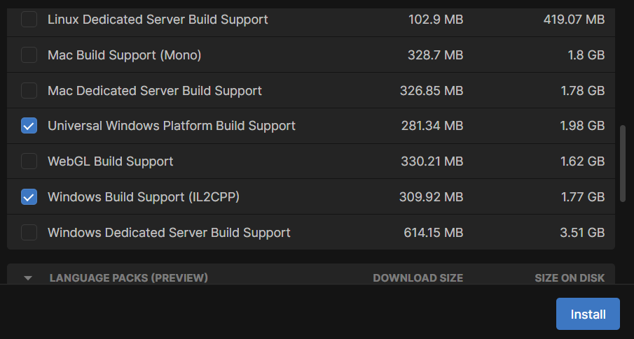

Pour la version 2021.3.32, cliquer sur le bouton "Unity Hub" et l'ouvrir dans Unity
Sur la page pour ajouter des modules, sélectionner seulement Universal Windows Platform Build Support et Windows Build Support (IL2CPP)

Cliquer sur "Install"
Installer Visual Studio
Visual Studio Community est un éditeur et compileur de code. Cet IDE va être utilisé par Unity pour créer des scripts et compiler notre application sur le Hololens 2.